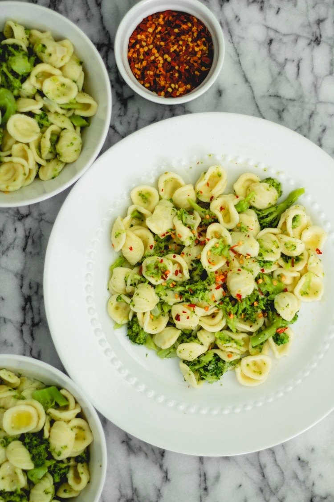

Pasta with Brocolli and Crushed Red Pepper

This simple dish will make your wildest dreams come true
Description
Brocolli. Pasta. Crushed red pepper. What more do I need to say?
Ingredients
- 1 lbs pasta, preferably whole wheat
- 1/2 cup Olive Oil
- 2 cloves of garlic
- 1 head of brocolli
- Two cloves of garlic
- One Tbsp crushed red pepper
- Parmesan Reggiano, grated
Steps
- Cook pasta according to package instructions
- Meanwhile, heat olive oil in a large sauce pan over medium heat
- Add garlic to pan. Sautee 30-60 seconds, until fragrant
- Add brocolli and sautee 6-8 minutes until tender.
- Combine pasta, brocolli, parmesan, and crushed red pepper.